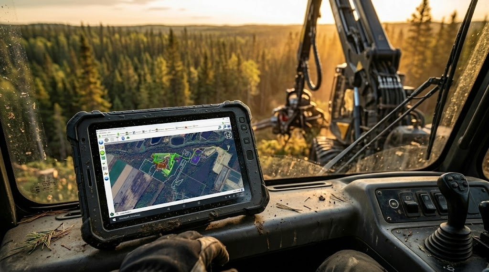
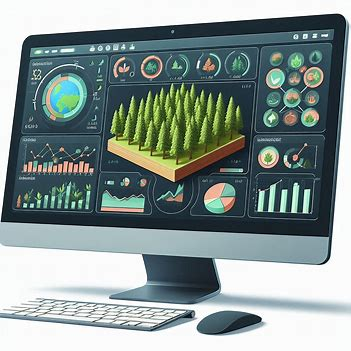

ForestLogix is a comprehensive forestry operations management platform available on Windows desktop, Windows tablet, Android, and iPhone. Designed to meet the demands of forestry fieldwork, it centralizes all your operational data in one place.
With real-time cloud synchronization and offline Bluetooth synchronization, your teams stay connected even in the most remote areas. All information flows automatically between the office, equipment-mounted tablets, and operators' mobile devices.


Powerful tools for every aspect of your forestry operations
Real-time GPS tracking with markers, lines, and polygons. Measure distances and areas, take georeferenced photos, and import your SHP, KMZ, and GPX files. Use custom MbTiles maps from LiDAR data (satellite, digital terrain model, canopy height, slopes) and synchronize your layers live via WFS with ArcGIS.
Centralize all your worksite documents: prescriptions, instructions, price lists, and contracts. Assign worksites to your teams and provide visitor access via QR code. Track production by species and quality for precise management of each operating site.
Create detailed profiles for each piece of equipment with inspection checklists. Schedule preventive maintenance with automatic reminders through work orders. Track fuel consumption and generate tax rebate reports. Quickly identify each piece of equipment using QR codes.
Record hours worked by worksite and equipment. Totals are calculated automatically, and you can filter data by date, client, or worksite to get exactly the information you need.
Create delivery slips for truckers and track sawmill payments. Generate detailed reports by trip, species, volume, and price for complete control over your transportation revenue.
Produce professional client reports and comprehensive internal reports including costs versus revenue, employee costs, fuel costs, and travel expenses. Summary reports are also available for a quick overview.
ForestLogix adapts to every workstation in your organization
The desktop version offers the full set of administrative features: user management, worksite configuration, advanced reports, and accounting integration. It is the nerve centre of your forestry management, ideal for managers and administrative staff.
Designed to be mounted directly on forestry equipment, the tablet version enables GPS track recording, real-time data entry, and offline synchronization via Bluetooth. Perfect for heavy equipment operators.
The Android app is built for field operators. It provides access to work orders, timesheets, full mapping, and all mobile features. Cloud and Bluetooth synchronization available.
The iPhone version offers the same features as Android with cloud synchronization. Ideal for foremen and managers who prefer the Apple ecosystem. Note: Bluetooth synchronization with tablets is not available on iPhone.
ForestLogix integrates with the geomatics and accounting tools you already use. Import and export your data in industry-standard formats for maximum interoperability.
The latest improvements to ForestLogix
Access official orthophotos and cartographic layers from the Quebec government directly in ForestLogix through built-in WMTS support.
Customize your WFS layers with advanced styles including dashed lines and outlines without fill for more precise mapping.
Download your WMS maps for offline access, ideal for remote areas without cellular coverage.
View your GPS tracks as individual points to clearly identify stops and passages in the field.
The accelerometer automatically detects tasks and breaks, recorded in GPX waypoints for detailed activity tracking.
The CP210x GPS driver installs automatically, simplifying initial device setup in the field.
Import your Fulcrum, ArcGIS Survey123, and XLSForm forms directly into ForestLogix to centralize your data collection.
Set up a personalized dashboard by form type to quickly access the most relevant information.
Enhanced harvester head data visualization with PivotGrid and ZIP file support for more comprehensive analysis.
A network diagnostic runs automatically at startup to quickly identify and resolve connectivity issues.
Intelligent automatic reconnection after WiFi signal loss to ensure continuous data synchronization.
MBTiles file transfers are now protected against corruption to guarantee the integrity of your custom maps.
Discover how ForestLogix can transform the management of your forestry operations.
Contact Us Request a Demo